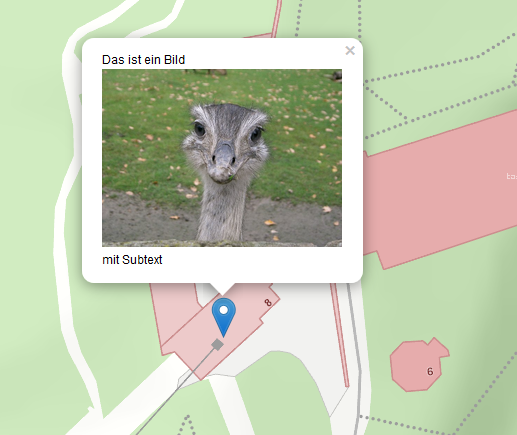
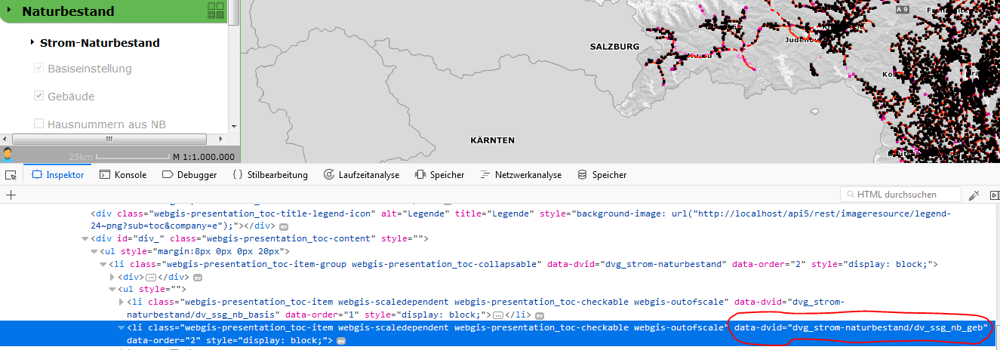
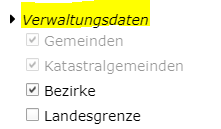

URL Parameters¶
In addition to the normal call, parameters can be passed:
https://{Host}/{Portal-Application}/{Portal-Page}/{Category}/{Map-Name}?param1=1¶m2=2
Map Extents and Markers¶
Map Extents¶
Parameter |
Description |
|---|---|
|
Specifies a bounding box that the map view automatically zooms to.
Syntax: Example: &bbox=14.6,47.3,15.2,48.1
|
|
Defines the center that the map view jumps to after starting.
Syntax: Example: ¢er=14.6,47.3
If no scale is specified ( |
|
Specifies the coordinate system, if the coordinates are not in WGS 84.
The EPSG code is expected as an integer (without the Example (GK-M34): &srs=31256
|
|
Defines the scale to zoom to.
Only taken into account if the |
|
Shows a marker on the map. Expects a JavaScript object with properties for the position and, optionally, a label. Example: &marker={lng:14.7,lat:47.2}
If no other parameters ( |
Passing a Single Marker¶
As described above, a marker can be passed when a map is called via the marker parameter. It is passed as JSON with various properties.
Formatting rules:
Double values use a period (
.) as the decimal separatorInteger values consist only of numbers
Strings must be enclosed in quotes
'
Property |
Data type |
Description |
|---|---|---|
|
Double |
Geographic longitude at which the marker is inserted. |
|
Double |
Geographic latitude at which the marker is inserted. |
|
Double |
If no geographic coordinates are used, X/Y coordinates
and the coordinate system can be passed here as the |
|
Double |
If no geographic coordinates are used, X/Y coordinates
and the coordinate system can be passed here as the |
|
Integer |
EPSG code of the coordinate system (without the |
|
String |
(Currently not used) – the default marker is always used. |
|
String |
Text information for the marker, shown as popup text on click. Images can be embedded by prefixing them with Example: img:http://…../bild.jpg
|
|
Boolean |
Specifies whether the popup text is shown automatically or only after a click. |
Examples:
A marker with the text “Hello World”:
&marker={lng:14.7,lat:47.2,text:'Hallo Welt'}
A marker with projected coordinates:
&marker={x:-68014.6,y:215601.4,srs:31256}
A marker with text and an image that is automatically opened when loading (openPopup=true):
&marker={
lng:15.4,
lat:47.09,
openPopup:true,
text:
'Das ist ein Bild img:https://upload.wikimedia.org/wikipedia/de/6/68/Nandu_gesamtes_Bild.jpg mit Subtext'
}

Passing Multiple Markers¶
Multiple markers can be passed via the markers parameter. The syntax corresponds to an array of individual markers.
Notes:
The markers are not only shown on the map, but are also included as dynamic content.
The optional parameter
markers_namecan be used to define a name under which the dynamic content is shown in the TOC.
Parameter |
Data type |
Description |
|---|---|---|
|
Array |
A list of markers to be shown on the map.
Each element in the array corresponds to a marker object with the same properties as the |
|
String |
Defines the display name for the dynamic content in the TOC. |
Example:
Multiple markers with individual popup texts:
&markers_name=Ziele&markers=[{lng:14.7,lat:47.2,text:'Ziel 1'},
{lng:14.9,lat:46.8,text:'Ziel 2'},
{lng:14.8,lat:47.4,text:'Ziel 3'},
{lng:15.8,lat:47.1,text:'Ziel 4'},
{lng:15.2,lat:46.9,text:'Ziel 5'}]
Queries¶
A query with values can be passed to the viewer when it is called. This query then automatically becomes the current query/identify topic in the viewer.
How it works: - If the query is passed without values, the query topic is activated in the user interface. - If query values are also passed, the query is executed and the view zooms to the results. - Results are selected on the map and marked with markers.
Parameter |
Data type |
Description |
|---|---|---|
|
String |
Name of the query, as defined in the CMS.
Example: |
Query values ( |
String |
The query values are named as defined in the CMS. |
|
String |
Sets the preset query topic for identify and search to a different topic. Example:
|
Note
The query ID for “visible topics” is #. Since the # character is reserved in URLs, it must be encoded as %23.
Note
The results of the query are selected on the map and marked with markers.
If you want to prevent the selection of the query results, the parameter
&mode=noselect can be used.
Display Filters¶
If display filters are offered on a map, a filter can be passed via a URL parameter.
Parameter |
Data type |
Description |
|---|---|---|
|
String |
ID of the filter, as defined in the CMS. |
|
String |
Placeholder for filter arguments. A value must be passed for each argument of the filter. |
|
String |
If the filter ID is not unique and occurs in different services, the service ID can be specified here. Without this, the filter is applied to all matching services.
|
Note
If the filter should also be shown in the display filter tool (when the user clicks the “Display Filter” tool), the service ID MUST be passed as well.
Examples:
A simple filter:
&filter=my-filter&filterarg_WERT1=abc
A filter with a unique service assignment:
&filter=my-filter&filterservice=my-service@my-cms&filterarg_WERT1=abc
Or alternatively:
&filter=my-service@my-cms~my-filter&filterarg_WERT1=abc
Tools¶
The viewer can be called with a preset tool.
Parameter |
Data type |
Description |
|---|---|---|
|
String |
ID of the tool that should be automatically selected when the map loads. Example: &tool=webgis.tools.measureline
|
Note
Only tools can be passed, not simple tool buttons. Simple tool buttons are tools that directly perform an action when clicked, e.g. Full Extent, Refresh, Back.
The possible tool IDs can be looked up at the following link: https://api.webgiscloud.com/rest/tools
Advanced Parameters for the Edit Tool¶
For the edit tool &tool=webgis.tools.editing.edit, the following additional parameters can be passed:
Parameter |
Data type |
Description |
|---|---|---|
|
String |
ID of the edit theme that should be set active. The ID is stored in the CMS on the corresponding edit theme. |
|
String |
Value for a field in the edit form. The field must be defined in the edit theme. |
|
String |
Specifies which edit subtool should be selected. Example: &tooloption=newfeature
Opens the edit form to edit a new feature. |
Note
The tooloption parameter only works if the map was opened with the
WebGIS Desktop Layout.
If this is not the case, the user must manually click “New Object”.
Visibility/Presentation Variants¶
To specify a particular presentation variant when calling the map, a list of variants can be passed. These are then automatically activated in the order specified.
Notes on how this works:
In the CMS, each presentation variant has its own URL.
In the viewer, however, these variants can be grouped as buttons, checkboxes, or in dropdowns.
Individual variants can only be passed if they are not in a group.
If the variant is in a group, only the entire group can be passed as a parameter.
The internal URL of a group always has the format:
dvg_[group name in lowercase with underscores instead of spaces].If the internal name of a group or variant is unknown, it can be determined using the browser’s developer tools (F12). Every element in the presentation variants in the TOC has a “data-dvid” attribute, whose value is the ID to be passed.

Parameter |
Data type |
Description |
|---|---|---|
|
String |
Name of the presentation variant or group. Both parameters are possible and have the same function. |
Example:
A call with multiple presentation variants:
&presentation=dvg_strom-naturbestand/dv_ssg_nb_geb,dvg_kataster
Note
If the presentation variant is a checkbox or option box,
you can also specify whether it should be enabled or disabled.
To do this, add the suffix =off to the name of the presentation variant.
Example:
&presentation=dvg_strom-naturbestand/dv_ssg_nb_geb=off,dvg_kataster
Visibility of Individual Layers¶
If toggling visibility via presentation variants is not possible, individual layers can also be directly toggled visible or invisible. The names of the layers (including group) are passed as a parameter.
Notes on how this works:
If the layer is in a group, the complete path must be passed with a backslash (
\) as the separator.Multiple layers can be separated by commas.
Example:

This results in the layer name:
Verwaltungsdaten\Bezirke
Parameter |
Data type |
Description |
|---|---|---|
|
String |
Switches the specified layers visible. Example: showlayers=Verwaltungsdaten\Bezirke,Verwaltungsdaten\Landesgrenze
|
|
String |
Switches the specified layers invisible. Example: hidelayers=Verwaltungsdaten\Bezirke,Verwaltungsdaten\Landesgrenze
|
Note
Targeted showing and hiding of individual layers should be used only in exceptional cases.
Possible problems
Layer names and groups can change over time, which can make call links unusable.
It is not checked which service a layer belongs to. If there are multiple layers with the same name in different services, this can lead to display errors.
Visibility of Background Services¶
Background services (basemaps) can be enabled via the basemap parameter. Multiple services can be passed, separated by commas:
The first service is used as the background basemap.
All further services are overlay basemaps.
Examples:
A single basemap service:
basemap=orhto_tiles_gray@my_cms
A basemap service with an additional overlay service:
basemap=ortho_tiles_gray@my_cms,streets_tiles_default@my_cms
Snapshots¶
If multiple snapshots have been defined for a map in the MapBuilder, a specific snapshot can be loaded via the snapshot parameter. The map is then opened with the visibility and stored extent set for the snapshot.
Example:
snapshot=snapshot-name
Adding Services¶
Additional services can be passed when a map is called. The parameter append-services or gdiservices can be used for this. The specified services are inserted in the order in which they were passed.
New services are added to the map.
Already existing services are ignored.
The last inserted service covers all previous services.
Available parameters:
Parameter |
Data type |
Description |
|---|---|---|
|
String |
A comma-separated list of service IDs. Example: append-services=service1,service2,service1@cms1
|
General (Native) URL Parameters¶
In addition to the specific URL parameters, general parameters can also be passed. These are treated as native call parameters and are transmitted to the server with every request in the viewer session. There, they can be processed accordingly.
Note
A general parameter is any parameter that does not correspond to one of the defined keywords
(e.g. query, abfragethema, etc.).
Example use case:
A map should be called with a project ID, so that only the associated objects are shown. This can be implemented using a locked filter.
Call:
http://...?...&project_id=4711...
The locked filter can then access this parameter:
PROJECT_ID='[url-parameter:project_id]'
Here, the prefix url-parameter: is used to set the value from the URL as the filter criterion. This only works for locked filters.
Automatic Adoption of the Project ID When Editing
For the project ID to be automatically adopted into a field, the following configuration can be used in the CMS on the edit field:
Set AutoValue to
custom.As the value for
custom, reference the URL parameter:
url-parameter:project_id
The prefix can be extended for specific actions:
oninsert:url-parameter:project_id
onupdate:url-parameter:project_id